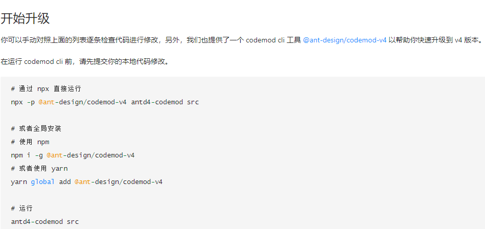

项目介绍
技术栈react，vue项目占比55开，react生态ui组件库只有极星项目使用antd(3.x),其他react项目antd均为4.x，vue生态ui组件库只有haier-visualization使用element-ui，其他均为ant-design-vue
考虑到公司私有npm仓库所用技术的统一性，可持续性，可维护性,下面三个内容请重视
1、后续的新项目使用react技术栈，新的页面全部采用function component，使用jsj-react中的hooks可以提升开发效率
2、极星项目60个分支，后续开发人员在所开发的分支第一时间核对antd版本号，根据如下的提示将antd从3版本升级到4，并及时做好分支的文档维护。

`主分支线上地址`: http://front.samego.com
`git仓库`: http://git.extremevision.com.cn/hjcs/npm-packages.git
`git分支`: master 主分支
关于npm的安装有疑问请联系相应开发人员
官网pc端
`主分支线上地址`: https://extremevision.com.cn/
`git仓库`: http://git.extremevision.com.cn/hjcs/lion2.0.git
`所用技术`: vue,nuxt.js
`git分支`: master 主分支 暂无其他分支
官网移动端
`主分支线上地址`: https://m.extremevision.com.cn/
`git仓库`: http://git.extremevision.com.cn/hjcs/lion2.0-mobile.git
`所用技术`: vue,nuxt.js
`git分支`: mobile 主分支 暂无其他分支
开发者平台 （对外称:极市) 登录账号： AllenCC 密码：314159pi...
`主分支线上地址`: https://www.cvmart.net/
`git仓库`: http://git.extremevision.com.cn/hjcs/amber2.0.git
`所用技术`: react,typescript,mobx-react, antd(4.x)
`git分支`:
- master 主分支
-
nanyou 南邮
线上地址: https://developer.aiebuy.cn/
-
gt_dev 高通
线上地址: https://challenge.cvmart.net/
-
wuxisuo 无锡所私有化云平台
测试地址：http://192.168.1.144:30080/ 账号: fsliu 密码: 123456
vpn地址: http://192.168.8.11:31080/ 账号: fsliu 密码: fsliu123
-
daikin 大金私有化
线上地址：https://ai-train.daikin.net.cn/
-
haier 海尔
线上地址: https://hstar.cosmoplat.com/ 账号: 18825162702 密码: hai710333er
测试地址：http://36.155.14.157:30080/ 账号: 15826846906 密码：q1a2z3456
vpn地址：登录海尔vpn打开chrome 10.133.11.71:30080 账号: fsliu 密码: 123456
-
binjiang 杭州滨江私有云平台
线上地址未知待后续更新
-
shanghaifudi 上海复地
线上地址未知待后续更新
`补充说明`:
-- 开发者平台登录: https://www.cvmart.net/login
账号： AllenCC 密码：314159pi...
-- 产品文档： iframe内嵌地址 https://docs.cvmart.net/#/
git仓库 http://git.extremevision.com.cn/hjcs/amber-doc.git
`主分支线上地址`： https://bbs.cvmart.net/
`git仓库`: 无
标注平台
`主分支线上地址`: 无， 只有测试地址： http://192.168.1.144:31105/ 账号 admin 密码 admin
`git仓库`: http://git.extremevision.com.cn/training_platform/cvat
`所用技术`: react,redux,ts,antd(4.x)
`git分支`:
-- master
-- 1.1.0
`补充说明`:
-- 项目运行：进入cvat-ui执行npm install，就可以快乐得开发
标注平台
`主分支线上地址`: 无， 只有测试地址： http://192.168.1.144:31105/ 账号 admin 密码 admin
`git仓库`: http://git.extremevision.com.cn/training_platform/cvat
`所用技术`: react,redux,ts,antd(4.x)
`git分支`:
-- master
-- 1.1.0
`补充说明`:
-- 项目运行：进入cvat-ui执行npm install，就可以快乐得开发
标注平台-数据模块
`主分支线上地址`: 无， 只有测试地址： http://192.168.1.144:31105/data 账号 admin 密码 admin
`git仓库`: http://git.extremevision.com.cn/hjcs/cvat-data.git
`所用技术`: vue,vuex
`git分支`:
-- master
-- develop
-- wuxisuo 无锡所标注平台数据模块
标注平台-绩效模块
`主分支线上地址`: 无， 只有测试地址： http://192.168.1.144:31105/manager 账号 admin 密码 admin
`git仓库`: http://git.extremevision.com.cn/hjcs/cvat-manage.git
`所用技术`: vue,vuex
`git分支`:
-- master
-- refactor 添加路由重定向 暂不清楚此分支什么作用
-- bug-hide_failed_task 暂不清楚此分支什么作用
海尔可视化
`主分支线上地址`: http://122.152.249.153:29080
`git仓库`: http://git.extremevision.com.cn/hjcs/haier-visualization
`所用技术`: vue,vuex,element-ui
`git分支`:
-- master 主分支
-- algo-config-tool_5.5.1_editor 可视化编辑器嵌入推理平台版本（对接推理平台登录功能）账号 admin 密码： y36py5jz
`补充说明`
vpn地址：登录海尔vpn打开chrome 10.133.11.74:29080
极市管理后台
`主分支线上地址`: https://ai-bg.cvmart.net/
`git仓库`: http://git.extremevision.com.cn/hjcs/ai-bg2.0.git
`所用技术`: vue,ant-design-vue,vuex
`git分支`:
-
- master 主分支
- develop 开发分支，测试通过后合并到master上
- develop_black 小黑开发分支高通
-
haier
测试地址：http://36.155.14.157:30082 账号 admin 密码: a2dj%%^^kd@&^&+
vpn地址： 登录海尔vpn打开chrome 10.133.11.71:30082 账号： admin 密码： a2dj%%^^kd@&^&+
-
nanyou 南油
线上地址: https://ai-bg.aiebuy.cn/ 账号 admin 密码: a2dj%%^^kd@&^&+
-
gt_dev 高通
线上地址：https://gt-bg.cvmart.net/login 账号 admin 密码: a2dj%%^^kd@&^&+
-
wuxisuo 无锡所
测试地址：http://192.168.1.144:30082/ 账号: admin 密码： a2dj%%^^kd@&^&+
- daikin 大金
`主分支线上地址`:
`git仓库`: http://git.extremevision.com.cn/hjcs/algo-config-tool.git
`所用技术`: react,antd(3.x),ts
`git分支`:
（60个分支，需要慢慢优化）
`主分支线上地址`: 无
`git仓库`: http://git.extremevision.com.cn/hjcs/reasoning-platform-admin.git
`所用技术`: vue,vuex,element-ui
`git分支`:
-- master
-- haier vpn地址：登录海尔vpn打开chrome 10.133.11.74:29580 用户名: admin 密码: admin2020
--
初筛平台
`主分支线上地址`: http://192.168.1.144:31250
`git仓库`: http://git.extremevision.com.cn/yumen/filebrowser.git 里面的frontend文件夹
`所用技术`: vue,vuex
`git分支`:
-- master 无锡所初筛平台用的此分支
-- dev_init 不知道是什么作用
极栈 （极市的mvp版本）
`主分支线上地址`: 暂无 6月份上线
`git仓库`: http://git.extremevision.com.cn/hjcs/client_train_plf.git
`所用技术`: react,antd4.x
`git分支`:
-- master
-- develop 开发分支，测试完后合并到master上 账号：geekx 密码：lx951753
极栈管理后台 （极市的mvp版本） 账号：admin 密码： admin2021
`主分支线上地址`: 暂无 6月份上线
`git仓库`: http://git.extremevision.com.cn/hjcs/client_train_bg.git
`所用技术`: vue,vuex
`git分支`:
-- master
-- develop 开发分支
vpn工具说明
海尔vpn：
1、 访问https://144.123.47.212 下载vpn软件并安装
2、 账号 A0043897 密码： Shanghun8023scc 登录vpn软件
无锡所vpn：
1, 访问https://file.tapd.cn/45991893/attachments/download/1145991893001003177/wiki下载并安装
2, 新增vpn网关地址 112.81.171.26 端口 8444
3， 添加完成后，输入账号: szjsj 密码：tmri@2018